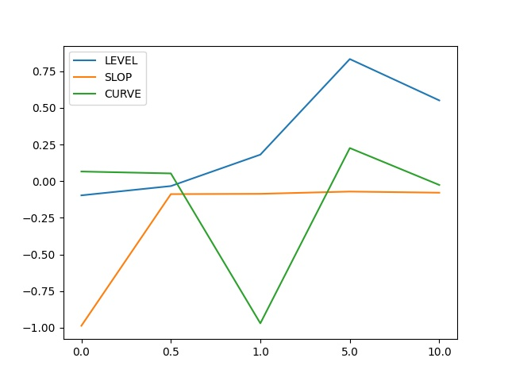

PCA模型
模型说明
-
模型概要
主成分分析PCA模型本质上是一个线性变换，这个变换把数据变换到一个新的坐标系统中，使得任何数据投影的第一大方差在第一个坐标上，第二大方差在第二个坐标上，依次类推。具体应用在收益率曲线中，根据历史数据得到的一般结论是，第一主成分代表收益率曲线的水平移动（LEVEL），其在各个期限上的系数比较接近，近似等于所有利率的平均值，代表了利率曲线的平行移动。第二主成分代表收益率曲线的陡度移动（SLOP），有期限利差的含义，代表利率曲线斜率的变化。第三主成分代表收益率曲线的曲度移动（CURVE），描述了曲线的曲度，代表利率曲线的曲度变化。
-
业务思维导图
-
模型适用业务范围
- 求收益利率曲线族水平移动、陡度移动和曲率移动这三个因子。
- 得到综合性的收益率曲线族的一条或多条收益率曲线。
函数说明
YieldCurvePCA
函数功能说明
YieldCurvePCA函数提供了计算收益率曲线族主成分的功能，当UI界面PCA_Dimension=3时，实际得到的时收益率曲线族的水平移动、陡度移动和曲度移动这三个因子。
函数算法说明
1.在一个收益率曲线族中，包含的远期利率数据矩阵表示为： 表示在第条收益率曲线上terms为时的远期利率。因此，的每一行是一条收益率曲线，每一列是一系列terms相同的远期利率值。
2.对数据矩阵进行处理，使其均值为0。
3.计算得到协方差矩阵。
4.然后计算特征值分解或奇异值分解，特征值或奇异值将降序排列。特征值分解为： 其中是正交矩阵，是对角矩阵。的列是归一化特征向量。即我们要求解的主成分。
5.每个成分构成的重要性计算如下： 其中是对角矩阵的对角元素。
6.根据成分构成的重要性，我们可以挑选出前k个主成分，取的前k列组成矩阵。
7.由于数据矩阵经过0均值处理，我们可以将得到的第一主成分数据加减一个常量使其能用于其它的业务模型（可选）
前端交互说明

Reference Libor：选取某种货币下的远期利率Libor曲线族。
Principal Components: 选取主成分分析模型，默认为Standard Correlation PCA模型。
PCA Dimension: 主成分分析中使用的维度数。
Global Shift: 所有Libor利率的全局移动，即在Libor利率基础上加上Global_Shift。
参数表
入参表：
| 序号 | 入参 | 入参说明 | 类型 | 是否必须 | 数据来源 |
|---|---|---|---|---|---|
| 1 | reference_libor | matrix | 远期利率的Libor曲线族，即要求输入T个历史时间点M个期限下的收益率曲线数据 | 是 | MarketData |
| 2 | pca_dimension | int | 主成分分析中使用的维度数 | 是 | Input |
| 3 | global_shift | float | 所有Libor利率的全局移动，即在Libor利率基础上加上Global_Shift | 是 | Input |
出参表：
| 序号 | 出参 | 出参说明 | 类型 | 备注 |
|---|---|---|---|---|
| 1 | feature | 降维后的主成分 | matrix |
函数隶属类型
该函数隶属model，可应用于收益率曲线族的降维，一般用于获取收益率曲线的水平移动因子，陡度移动因子和曲度移动因子。
函数效果分析
案例分析数据：
reference_libor
Date 0.0 0.5 1.0 5.0 10.0 2022-05-26 0.012500 0.017391 0.019246 0.024885 0.027100 2022-05-27 0.012002 0.017321 0.019133 0.024767 0.026974 2022-05-30 0.011928 0.017351 0.019141 0.025113 0.027225 2022-05-31 0.012277 0.017333 0.019160 0.025464 0.027426 2022-06-01 0.012002 0.017295 0.019415 0.025594 0.027551
pca_dimension=3
global_shift=1.5

| 序号 | 函数名称 | Fusion结果 | 开源结果 | 差值% | 影响程度 |
|---|---|---|---|---|---|
| 1 | YieldCurvePCA | PC1:[-0.09671292, -0.03332887, 0.18121228, 0.83349517, 0.55130559] PC2:[-0.98669128, -0.08831063, -0.0862762 , -0.07087691, -0.07857749] PC3:[ 0.06590256, 0.05298746, -0.97009136, 0.22606086, -0.02585397] | 无/弱/严重 |
函数脚本代码
import numpy as np
def YieldCurvePCA(yield_data, k=3, global_shift=0):
X = yield_data.values
n_samples, n_features = X.shape
mean = np.array([np.mean(X[:, i]) for i in range(n_features)])
# normalization
norm_X = X - mean
# scatter matrix
scatter_matrix = np.dot(np.transpose(norm_X), norm_X)
# Calculate the eigenvectors and eigenvalues
eig_val, eig_vec = np.linalg.eig(scatter_matrix.astype(float))
eig_val = eig_val.real
eig_vec = eig_vec.real
eig_pairs = [(np.abs(eig_val[i]), eig_vec[:, i]) for i in range(n_features)]
eig_pairs = sorted(eig_pairs, key=lambda y: y[0], reverse=True) # 水平移动、陡度移动和曲率移动
feature = []
ele = eig_pairs[0][1]
if (ele > 0).sum() < 0.5 * (len(ele)):
ele = -ele
ele += global_shift
feature.append(global_shift)
ele = eig_pairs[1][1]
if np.corrcoef(np.arange(len(ele)), ele)[0, 1] < 0:
ele = -ele
feature.append(ele)
ele = eig_pairs[2][1]
if np.polyfit(np.arange(len(ele)), ele, deg=2)[0] < 0:
ele = -ele
feature.append(ele)
feature = np.array(feature)
new_feature = []
for i in range(k):
if k < 3:
new_feature.append(feature[i])
else:
new_feature.append(eig_pairs[i][1])
new_feature = pd.DataFrame(data=new_feature, columns=yield_data.columns)
return new_feature